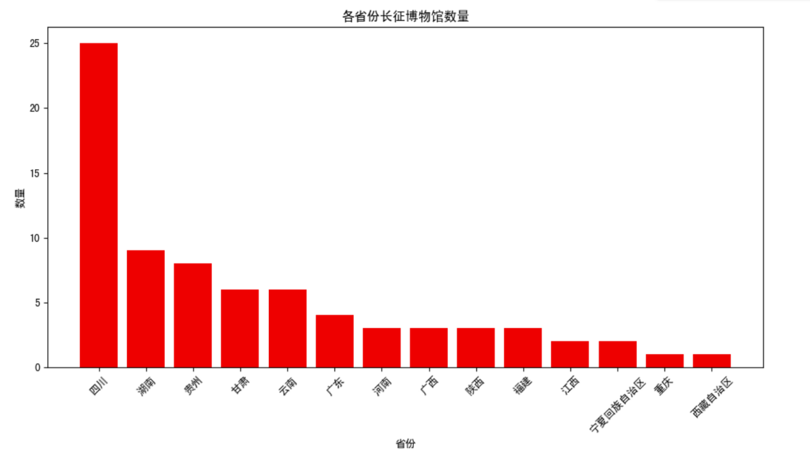

Artifacts Overview
The number of artifacts from the Long March period is quite large, and it is difficult to determine an
exact figure, as many artifacts are scattered across museums, memorials, and private collections. The
Long March is an important event in the history of the Chinese Communist Party, and the artifacts
involved include documents, photographs, equipment, and sites. China's Long March memorials are
generally distributed across Sichuan Province, Hunan Provinc, Guizhou Province, Gansu Province and
Yunnan Province.

Quote: www.hongsehui.cn
For example, regarding the Long March artifacts in Shaanxi Province, as of 2016, there are a total of
142 sites related to the Long March, mainly distributed along the marching routes of the Central Red
Army and the Red Twenty-Fifth Army. This includes 3 nationally protected cultural heritage sites, 10
provincial heritage sites, 42 municipal and county-level heritage sites, and 87 general immovable
cultural relics (the protection level of which has not yet been determined).
Quote: 吕亚歌(2016).西省长征文物保护与利用研
Long March Museum and Site Display
Introduction and display of artifacts
Artifact: Hemp Grass Shoes
Specifications: Approximately 27.5 cm long, 11.2 cm wide, and 1.5 cm high; currently in good condition.
Material: Hemp rope.
This pair of grass shoes is made primarily from hemp rope, crafted using traditional methods, and is
referred to as hemp grass shoes. What makes this pair special is that it is not made from hemp rope
alone but from several materials. The main part of the sole is made from braided hemp rope, while the
toe and heel are reinforced with leather. The straps above the foot are made from cord, and notably, the
bottom of the shoes is stitched with old tires, significantly enhancing their durability and comfort.
This pair of grass shoes exemplifies how Red Army soldiers, in times of resource scarcity, utilized
their ingenuity and made the most of available materials to solve their equipment challenges.
Artifact: Military Cap
Specifications: Diameter of approximately 20 cm, brim length of about 20 cm, width of about 6 cm, and a
height of approximately 8 cm.
This military cap is one of the typical caps of the Red Army, gray in color, octagonal in shape, with a
five-pointed red star prominently displayed at the center and a front brim. The cap has a diameter of
approximately 20 cm, a brim length of about 20 cm, a width of about 6 cm, and a height of approximately
8 cm. This cap was worn by Liu Yongzhen, a soldier of the Red Sixth Army Corps, throughout the Long
March, accompanying him through numerous hardships. After the successful completion of the Long March,
he kept this cap as a cherished memento. In 1955, when the Lüshun Military Museum was established, Liu
Yongzhen donated this beloved cap. In 1977, following directives from the General Political Department,
the Lüshun Military Museum was closed, and all its artifacts were transferred to the Military Museum for
preservation.